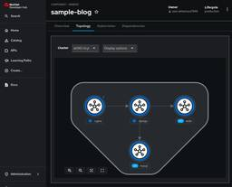

赤帽エンジニアブログ
https://rheb.hatenablog.com/
レッドハット株式会社のエンジニアがオープンソーステクノロジーについての最新の情報を発信するブログ。LinuxからOpenStack、OpenShift、Ansibleなどの情報を発信しています。
フィード

【Developer Hub 実践｜第4回】Componentを作成・登録しよう
赤帽エンジニアブログ
こんにちは、Red HatでOpenShift関連のプリセールスをしている北村です。 これまでGitHubやGitLabの認証連携を進めてきたことで、Developer Hubにアクセスできる状態になったかと思います。 今回はDeveloper HubにComponentを登録し、その表示を確認していこうと思います。 ComponentはDeveloper HubのEntityのひとつで、アプリケーションやマイクロサービス、さらには社内のツールやサービスなど、開発者ポータルで管理したい要素を表すものです。この記事では、Componentの基本的な概念から、実際にDeveloper Hubに登録…
4日前

Camel の開発ツール - Camel JBang (Camel CLI) のご紹介 （２）
赤帽エンジニアブログ
レッドハットのソリューションアーキテクトの森です。 Red Hat build of Apache Camel（旧 Red Hat Fuse）では、開発のためのツールをいくつかご用意しています。 今回は、Camel JBang の Kubernetes Plugin をご紹介します。 Camel JBang Kubernetes Plugin を使うと、ローカル環境でカジュアルにCamelのルートを試すのと同じ感覚で、コマンド一発でKubernetesクラスタにデプロイしたり削除したりできます。 前回の記事はこちら rheb.hatenablog.com
23日前
systemdのせいでNFS mountに失敗する話
赤帽エンジニアブログ
Red Hatの森若です。 systemdの前後関係で問題が発生することが原因で、NFS mountに失敗することがあります。 実際の問題で困っている人は以下のナレッジ記事をどうぞ :) access.redhat.com 今回はこの背景を簡単に紹介します。 systemdによる前後関係の矛盾検出 systemdはどのunitをいつ起動するかを、After= および対応する Before= で管理しています。 この定義はシステム起動やシャットダウン時のような、複数のunitのstart/stopが関連する操作の時に利用され、systemdはこの前後関係が満たされる範囲で並列にstart/sto…
24日前
Camel の開発ツール - Camel JBang (Camel CLI) のご紹介 （１）
赤帽エンジニアブログ
レッドハットのソリューションアーキテクトの森です。 Red Hat build of Apache Camel（旧 Red Hat Fuse）では、開発のためのツールをいくつかご用意しています。 今回は、効率よくプロトタイピングを行うことができる、Camel JBang (Camel CLI) についてご紹介をします。 Camel JBangを使用すると、シンプルなスクリプトファイルを使用してCamelルートを実行できます。
1ヶ月前
【Developer Hub 実践｜第3回】GitLabを使用した認証を実装しよう
赤帽エンジニアブログ
こんにちは、Red HatでOpenShift関連のプリセールスをしている北村です。 前回の記事ではGitHubと連携してDeveloper Hubの認証を実装しました。 しかし中には、GitHubではなく社内のオンプレミス環境に構築したGitLabを利用している方もいるかと思います。 なので今回はGitLab OAuthを利用したDeveloper Hub認証の実現方法をまとめてみます。 【第1回】Developer Hubをインストールしてみよう 【第2回】GitHubを使用した認証を実装しよう 【第3回】GitLabを使用した認証を実装しよう ←この記事 GitLabを利用した認証に関す…
1ヶ月前
開発環境のセキュリティを守ろう！ Red Hat Trusted Software Supply Chain/Trusted Application Pipeline
赤帽エンジニアブログ
こんにちは。Specialist Solution Architect の瀬戸です。 Red Hatから去年発表されたRed Hat Trusted Software Supply ChainおよびTrusted Application Pipelineという製品群をご存知でしょうか？ ご存知でなくても、これらの製品が実現したいことはとても簡単なので、簡単に学んでみましょう。 どこにでもある「脅威」 これらはTrusted (信頼できる程度の意味)という名前がついている通り、セキュリティを担保するための製品群です。 ソフトウェアを開発して、本番環境でアプリケーションを動作させるまでをセキュアに…
1ヶ月前
RHEL 9.5でのopensslリベース
赤帽エンジニアブログ
Red Hatの森若です。 Red Hat Enterprise Linux(RHEL) 9.5 にて、opensslが 3.0.x から 3.2.x にリベースされています。 Red Hat Enterprise Linux 9.5 リリースノート >> 4.2. セキュリティー RHEL 9.0から9.4まで提供されていたopenssl 3.0.x ライブラリを利用したまま、 RHEL 9.5 の openssl 3.2.x ライブラリを想定したアプリケーションを使おうとする(またはその逆)と問題がある可能性があります。 たとえばpostfixではライブラリのバージョンを確認しているので、…
1ヶ月前
LogFileMetricExporter カスタムリソースを見てみる
赤帽エンジニアブログ
LogFileMetricExporter カスタムリソースを見てみる はじめに LogFileMetricExporter 収集できるメトリクス ダッシュボードで確認 Top producing containers Top producing containers in last 24 hours DaemonSet の定義をみる ソースをみる まとめ LogFileMetricExporter カスタムリソースを見てみる はじめに 今年も残り僅かとなりました。OpenShift Advent Calendar 2024 24日目の記事です。年の瀬のお忙しい中お立ち寄りありがとうございます…
1ヶ月前
2025年のAnsibleとわたし
赤帽エンジニアブログ
みなさん本当にメリークリスマス｡Red Hatのさいとうです｡ Ansible Advent Calendar 2024の今年最後の記事です｡例年､最終日の記事では､翌年の予想をしているのですが､昨日のよこちさんの記事で紹介されていたとおり､AWXのリニューアル工事が進行中で来年の予想がさっぱりつきません｡もう今年は来年の予想をあきらめました｡来年はおとなしく運命を受け入れるのみです｡ そういったわけで､今日の記事では､来年の安定したAnsibleライフに向けて開発環境をコンテナに移行してみたというお話をしようかと思います｡ 大掃除の時期です 僕は､Ansibleのエンジン部分やモジュール･プ…
1ヶ月前
【Developer Hub 実践｜第2回】GitHubを使用した認証を実装しよう
赤帽エンジニアブログ
こんにちは、Red HatでOpenShift関連のプリセールスをしている北村です。 前回の記事でDeveloper Hubのインストールが完了したので、今回はGitHubと連携してDeveloper Hubの認証を実装します。 【第1回】Developer Hubをインストールしてみよう 【第2回】GitHubを使用した認証を実装しよう ←この記事 【第3回】GitLabを使用した認証を実装しよう 前回の状態 前回ログイン画面まで表示されることを確認しましたが、この状態でGitHubの"Sign In"を選択すると、以下のようなエラーが表示されます。 これはまだGitHubとの連携情報がDe…
1ヶ月前
Ansible Automation Platform 2.5で新しくなったEvent-Driven Ansibleを使ってみる
赤帽エンジニアブログ
はじめに Ansible - Qiita Advent Calendar 2024 - Qiita の12/23 の記事になります(4時間遅れ) Red Hatでコンサルタントをしている山下です。 今回の記事では2024年10月にリリースされたAAP 2.5 でアップデートされたEvent-Driven Ansible (EDA) の新機能を紹介させていただきます。 1.イベントのルーティングがさらに簡単に！ AAP 2.5からWebhookを利用したイベントルーティングを簡素化することができる、「イベントストリーム」という新しい仕組みが導入されました。 これにより、イベントソースを複数のルー…
2ヶ月前
ミニチュア工場 スマートファクトリへの道 -工場長の大塚さん -
赤帽エンジニアブログ
はじめに 本記事は、OpenShift Advent Calendar 2024 の12月23日の記事です。 皆様、こんにちは！ レッドハットのミニチュア工場の工場長、大塚から情報をお届けします。 出展: イラストや レッドハットでは、オフィスにミニチュア工場を導入し、IT（情報技術）とOT（運用技術）の技術を融合した便利なソリューションを創出していきます。 実際に工場が動いている様子など、詳細は以下の記事をご参照ください。 rheb.hatenablog.com ご挨拶 レッドハットのミニチュア工場、工場長の大塚と申します。 普段は、製造業のお客様を中心にプリセールス活動をしています。 ハー…
2ヶ月前
ミニチュア工場 スマートファクトリーへの道
赤帽エンジニアブログ
1. はじめに 2. IT/OT融合の動向 IT（情報技術）とOT（運用技術）の「融合」とは レッドハットの取り組み PLCをソフトウェアで定義する ①PLCのハード故障時の駆けつけ保守のコスト削減 ②ハードウェア集約によるハードウェアコストの削減や、配線変更のしやすさの向上 ③変種変量生産の生産能力の向上!? そして、妄想は尽きない... Linux Foundation配下に「margo」設立 3. ソフトウェアファーストでミニチュア工場をスマート化してみよう！ ミニチュア工場について簡単に解説 1. 自動倉庫 2. 搬送ロボット 3. 加熱装置 4. 研磨装置 5. 仕分け装置 デモの解…
2ヶ月前
Ansible Tips: rawモジュールのススメ
赤帽エンジニアブログ
レッドハットのAnsibleサポートチームのひよこ大佐こと八木澤です。クリスマス目前で、気温も寒くなってきましたが皆様いかがお過ごしでしょうか。 今回は、「Ansible Tips」として、Ansibleで知っておくと役立つちょっとした小ネタや知識をご紹介します。 この記事は「Ansible Advent Calendar 2024」の23日目の記事になります。 rawモジュールとは？ Ansibleには多種多様なモジュールがありますが、一部他のモジュールと挙動が大きく異なるモジュールも存在します。そのうちの一つが、「raw」モジュールです。 ansible.builtin.raw modul…
2ヶ月前
Ansible Playbook で極端にループが遅くなる
赤帽エンジニアブログ
はじめに Red Hat でコンサルタントをしている id:nanodayo です。 タイトル通り、Ansible Playbook で極端にループが遅くなった話となります。 ※実案件での知見ですが、案件特有の情報を載せない形であればOKと、お客様の許可を得て記事にしています。 Ansible - Qiita Advent Calendar 2024 - Qiita の12/21 の記事になります(1日遅れ) 結論(わかったこと) include_tasks や flatten を伴うループは、ループ数が多いと極端に遅くなる(測定環境では500ループで5h程度) ループ数100では 3min …
2ヶ月前
OpenShift の Storage Class Migration
赤帽エンジニアブログ
※この記事は OpenShift Advent Calendar 2024 の 20日目の記事です。 qiita.com こんにちは、ストレージと OpenShift を生業にしているうつぼ（宇都宮）です。ご無沙汰しております。 ここ最近というかこの一年はすっかり OpenShift Virtualization（OCP-V）の小僧として活動させていただいております。 お陰様で OCP-V は非常に多方面から注目を浴びております。ありがとうございます。 さて。OCP-V は仮想マシンのライブマイグレーションができることで知られていますが、ストレージのライブマイグレーションにはこれまで対応してい…
2ヶ月前
OpenShift4は構成するためにノードが何台必要なのか？
赤帽エンジニアブログ
はじめに はじめまして、Red HatでOpenShift Container Platformのテクニカルサポートの野間です。OpenShift Advent Calendar 2024 の12/19の記事ですが、遅れてしまいました。申し訳ありません。 本日はOpenShift Container Platformでサポートされるノード構成について、現在の情報を整理してお伝えします。というのも、リリースから5年の進化をとげ、選択できる構成が格段に増えました。これにより、初学者にとって「結局、何台のサーバー（インスタンス）が必要なのか」が製品ドキュメントから理解しづらくなったと思います。 co…
2ヶ月前
Ansible Event-DrivenとPerformance Co-Pilot(PCP)ではじめるファイルシステム管理
赤帽エンジニアブログ
こんにちは。Red Hatの呉と申します。普段はAnsible Automation Platform製品のテクニカルサポートエンジニアをしております。 今回は題名の通り、Ansible Event-DrivenとPerformance Co-Pilot(PCP)を使ったファイルシステム管理について紹介したいと思います。 Linuxサーバーを使っていたら、いつのまにかファイルシステムがいっぱいになっていたという状況は誰しも一度は経験したことがあるかと思います(私だけでしょうか笑)。 検証の最中にサーバーがフリーズしたりして面倒ですし、それだけならまだしも本番環境で発生したら、面倒では済まない事…
2ヶ月前
Image Mode for RHEL の構築から管理を Ansible で自動化してみる
赤帽エンジニアブログ
こんにちは。Red Hat ソリューションアーキテクトの清水です。RHEL9からImage Mode for RHELという新しいオペレーティングシステムのデプロイメント方式が導入されていますが、皆さん触ってみたことはありますか？本ブログ記事では、このImage Mode for RHELを使った仮想マシン(VM)を、Ansibleを使ってデプロイからアップデートを自動化する方法についてご紹介してきたいと思います。 Image Mode for RHEL とは 最初に少しおさらいをしておきましょう。Image Mode for RHELは、元々bootcというプロジェクトに端を発しており、RH…
2ヶ月前
ROSAでのAWS STSによるAmazon EFS/ECRの利用
赤帽エンジニアブログ
OpenShift Advent Calendar 2024の12/17の記事です。 Red Hatの小島です。 Red Hat OpenShift Service on AWS(ROSA)ではセキュリティを考慮してAWS STS(Security Token Service)を利用したデプロイと運用を推奨しており、ROSA with HCPクラスターをデプロイする際は、AWS STSの利用を必須としています。本記事ではAWSユーザーから聞かれることの多いAmazon EFSとAmazon ECRについて、専用のOperatorからAWS STSの認証情報で利用する方法の概要をご紹介します。な…
2ヶ月前
OpenShift AIでマルチノードのLLM推論を試す
赤帽エンジニアブログ
こんにちは、Red Hatでソリューションアーキテクトをしている石川です。 先日OpenShift AIのバージョン2.16がリリースされました。 現在OpenShift AIは非常にハイペースでリリースが行われており、約1ヶ月に一度のペースで機能アップデートが行われています。12月にリリースされたバージョン2.16についても多くの機能が追加されており、その中の一つとしてマルチノードでLLMの推論を行う機能がTech Previewとして追加されました。 docs.redhat.com LLMの推論を行う上で大事な要素として、どれだけのGPUのVRAM（メモリ）を利用できるかがあります。例えば…
2ヶ月前
Apache Camel 向け Visual開発ツール Kaoto に Data Mapper(Tech Preview)が
赤帽エンジニアブログ
以前の記事rheb.hatenablog.com で紹介した Apache Camel 向け開発ツールですが、今回は 先日(2024/12/10)リリースされた Kaoto 2.3 に関するご案内です。 ビジュアル Camel エディターとしてアップデートを重ねる Kaoto ですが、今回のマイナーアップデートにも注目すべき機能が多数あります。 特に目立つ機能を２つご紹介します。 1: 製品版 Camel ライブラリーバージョンを選択可能に コミュニティーバージョンだけでなく製品バージョンを指定できますので、より迷うことなく必要なコンポーネントを選びエディットできます。(画像は、Kaotoコミ…
2ヶ月前
Camel Karaf から Camel Spring Boot もしくは Camel Quarkus への移行
赤帽エンジニアブログ
Red Hat の古市です。 Red Hat Fuse は 既に End of Life を向かえ、Extended Life cycle support(ELS)の終了も間近に控えています。 https://access.redhat.com/product-life-cycles?product=Red%20Hat%20Fuse 皆さん、Red Hat Build of Apache Camel 4.x への移行はお済みでしょうか？順調に進んでいますでしょうか？ Karaf runtime 上で、 Blueprint XML DSL を使った資産をお持ちの方が多くいらっしゃるかと思いますが…
2ヶ月前
OpenShift Virtualization のディスクに関する独り言（CDI関連）
赤帽エンジニアブログ
※この記事は OpenShift Advent Calendar 2024 の 10日目の記事です。 qiita.com こんにちは、ストレージと OpenShift を生業にしているうつぼ（宇都宮）です。ご無沙汰しております。 ここ最近というかこの一年はすっかり OpenShift Virtualization（OCP-V）の小僧として活動させていただいております。 お陰様で OCP-V は非常に多方面から注目を浴びております。ありがとうございます。 OCP-V 小僧の活動は多忙ではありますが、良いところが多くあります。 それは OCP-V のお話をしていると、ほぼ確実にストレージの話題が出…
2ヶ月前
Hosted Control Plane を AWS 環境上にデプロイしてみる
赤帽エンジニアブログ
Red Hat で OpenShift をサポートしている Yiyong です。この記事はOpenShift Advent Calendar 2024のエントリです。 qiita.com OpenShift 4.17 バージョンより、OpenShift 公式ドキュメントの Hosted Control Planes (HCP) の章が大幅に充実しましたので、Hosted Control Plane on AWS 公式ドキュメントのステップを参照しながらデプロイしてみました。なお、今回は Managed Service となる ROSA with HCP ではなく、Self-Managed の …
2ヶ月前
メッセージ監視を試してみる
赤帽エンジニアブログ
メッセージ監視 はじめに OpenShift Cluster Logging Ruler メッセージ監視の通知先の AlertManager 利用するアプリとメッセージ監視ルール アラート監視の設定の有効化 パターン1: 管理者用の AlertManager への通知 パターン3: 利用者用の AlertManager への通知 まとめ メッセージ監視 はじめに 急に冷え込んできました。OpenShift Advent Calendar 2024 の 7 日目の記事です。先日 5日目の記事でアラート通知先がどのように変えられるかを確認しました。 本日は、Cluster Logging 機能の1…
2ヶ月前
OpenShift のアラート通知の設定
赤帽エンジニアブログ
OpenShift のアラート通知の設定 はじめに OpenShift のモニタリングスタック Cluster Monitoring User Workload Monitoring アラート通知のコントロール ケース1 利用者はアラートの設定だけ行いたい ケース2 利用者はアラートの設定も通知先の設定も行いたい ケース3 管理者も多くのアラート通知を行うので、利用者の負荷と分散したい場合 まとめ OpenShift のアラート通知の設定 はじめに この時期にのみ記事を書いている気がしますが、OpenShift Advent Calendar 2024 の 12月5日の記事です。サンタクロース…
2ヶ月前
ansible-navigator を使った場合の情報の受け渡し
赤帽エンジニアブログ
Red Hat で Ansible のソリューションアーキテクトをしている中島でございます。 本エントリーは Ansible Advent Calendar 2024 の6日目の記事となります。 Ansible Advent Calendar 2024 にはAnsible 関する様々なTIPSやナレッジが投稿されておりますの、Ansible を触っている方はご一読いただくと、自動化のステップアップのきっかけを得られるかもしれません。 さて、現在の Red Hat Ansible Automation Platform(以下AAP) は Playbook を実行するためにコンテナ環境(Execu…
2ヶ月前
Ansible Collectionメンテナの日常(リリース編)
赤帽エンジニアブログ
みなさん今日もメリークリスマス｡昨日に引き続きRed Hatのさいとうです｡Ansible Advent Calendar 2024の､12月5日の記事をお届けします｡ ansible.posix collection version 2.0.0 をリリースしました 僕はサポートチームに所属していますが､表の仕事の障害解析の合間にアップストリームのメンテナの仕事もしています｡こういう境遇の人をRed Hatではよく見かけます｡ Red Hatは､一般社会的には謎に包まれているとはいえオープンソースソフトウェアカンパニーですから､所属している部門や､就いている職種にかかわらず､アップストリームへ…
2ヶ月前
パブリッククラウドでのRHELのインプレースアップグレード
赤帽エンジニアブログ
Red Hatの小島です。 クラウドベンダーがサポートする従量課金制RHEL(オンデマンドのRHELインスタンス)では、Red Hat Update Infrastructure (RHUI) というクラウド環境専用のRHELリポジトリを使って、RHELパッケージのダウンロード/インストール/アップデートなどができるように予め設定されています。さらに、AWS/Azure/Google Cloudの従量課金制RHELでは、Red Hat Subscription Management (RHSM) ではなくRHUIを利用して、RHEL7以降のRHELやRHEL with SAP HANAをインプ…
2ヶ月前